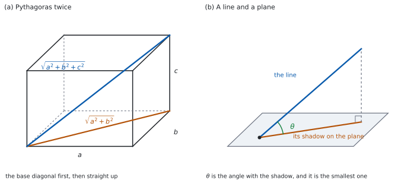

SL 3.1 — Three-dimensional geometry（空間図形）
- 空間の \(2\) 点の距離と中点を求められる。
- right pyramid（正角錐）・right cone（直円錐）・sphere（球）・hemisphere（半球）の体積と表面積を求められる。
- それらを組み合わせた立体で、かくれた面を数えずに表面積を出せる。
- 立体の中から、使える直角三角形を見つけられる。
- \(2\) 直線のなす角と、直線と平面のなす角を求められる。
The idea
1. 空間の座標
平面では \((x, y)\) の \(2\) つでしたが、空間では \(3\) つになります。
\[ (x, \ y, \ z) \]
\(x\) 軸・\(y\) 軸・\(z\) 軸は、たがいに直角に交わります。\(z\) は「高さ」だと思ってさしつかえありません。
2. \(2\) 点間の距離
\[ d = \sqrt{(x_{1}-x_{2})^{2} + (y_{1}-y_{2})^{2} + (z_{1}-z_{2})^{2}} \tag{1}\]
公式集の 3.1 の欄に Distance between two points として印刷されています。
\(d = \sqrt{(x_1-x_2)^2 + (y_1-y_2)^2 + (z_1-z_2)^2}\)
平面の \(2\) 点の距離（\(2\) つの項）も、Prior learning の欄に印刷されています。\(z\) の項が \(1\) つ増えただけです。
たとえば \(\mathrm{A}(1, 2, 3)\) と \(\mathrm{B}(3, 5, 9)\) なら、差は \(2\)、\(3\)、\(6\) なので
\[ d = \sqrt{2^{2}+3^{2}+6^{2}} = \sqrt{4+9+36} = \sqrt{49} = 7 \]
引く順番はどちらでもかまいません。 なぜそう言えるのかは、例題 1 の (d) で考えます。
3. 中点
\[ \mathrm{M} = \left(\frac{x_{1}+x_{2}}{2}, \ \frac{y_{1}+y_{2}}{2}, \ \frac{z_{1}+z_{2}}{2}\right) \tag{2}\]
公式集の 3.1 の欄に Coordinates of the midpoint of a line segment として印刷されています。
\(\left(\dfrac{x_1+x_2}{2}, \dfrac{y_1+y_2}{2}, \dfrac{z_1+z_2}{2}\right)\)
それぞれの座標の平均です。
同じ \(\mathrm{A}(1, 2, 3)\)、\(\mathrm{B}(3, 5, 9)\) なら、中点は \(\left(2, \dfrac{7}{2}, 6\right)\) です。
4. 立体の体積と表面積
公式集の 3.1 の欄と、その直前の Prior learning の欄に、次が印刷されています。
| もの | 公式集の式 |
|---|---|
| Volume of a right-pyramid | \(V = \dfrac{1}{3}Ah\)（\(A\) は底面積、\(h\) は高さ） |
| Volume of a right cone | \(V = \dfrac{1}{3}\pi r^{2}h\) |
| Area of the curved surface of a cone | \(A = \pi r l\)（\(l\) は slant height） |
| Volume of a sphere | \(V = \dfrac{4}{3}\pi r^{3}\) |
| Surface area of a sphere | \(A = 4\pi r^{2}\) |
| Volume of a cylinder（prior learning） | \(V = \pi r^{2}h\) |
| Curved surface of a cylinder（prior learning） | \(A = 2\pi r h\) |
| Volume of a prism（prior learning） | \(V = Ah\) |
半球（hemisphere）の式は、印刷されていません。 球の式から自分で出します（第 5 節）。
slant height（母線）\(l\) は、円錐の頂点から底面の縁までの長さです。高さ \(h\) とはちがいます。
\[ l = \sqrt{r^{2}+h^{2}} \tag{3}\]
たとえば \(r = 4\)、\(h = 3\) の円錐なら \(l = 5\) で、体積は \(\dfrac{1}{3}\pi(16)(3) = 16\pi\)、側面積は \(\pi(4)(5) = 20\pi\)、底面の円を入れた表面積は \(20\pi + 16\pi = 36\pi\) です。
surface area は、ふつう底面も入ります
curved surface area（側面積）と total surface area（表面積）は別ものです。
問題文に curved と書いていなければ、底面も足します。 円錐なら \(\pi r l + \pi r^{2}\) です。
5. 半球と、組み合わせた立体
半球は球の半分なので、体積は
\[ V = \frac{1}{2} \cdot \frac{4}{3}\pi r^{3} = \frac{2}{3}\pi r^{3} \tag{4}\]
曲がった面も球の半分で \(\dfrac{1}{2}(4\pi r^{2}) = 2\pi r^{2}\) です。ただし、平らな円の面を足すかどうかは、その半球がどう置かれているかで決まります。
- 単独の半球（中身のつまった
solid hemisphere。伏せて置いた形）→ 曲面と平らな円の \(2\) 枚で \(2\pi r^{2} + \pi r^{2} = 3\pi r^{2}\) - 同じ半径の円柱の上にのった半球 → 平らな面はぴったりかくれているので、足しません。
- 半径のちがう立体の上にのった半球 → かくれるのは重なっているところだけです。半径 \(R\) の円柱の上に半径 \(r\)（\(r < R\)）の半球をのせたら、円柱の上の面はドーナツ形に \(\pi R^{2} - \pi r^{2}\) だけ見えるので、そのぶんは足します。
\(2\) つ以上の立体を組み合わせるときは、体積は足す、表面積は「外から見える面だけ」足す、と考えます。
円柱の上に半球をのせたら、その境目の円は、外から見えません。
体積は単純に足せますが、表面積は「見える面の合計」です。組み立てた形を思いうかべて、面を \(1\) つずつ数えてください。
6. 空間の中の直角三角形を見つける
SL の試験で立体を題材に問われる三角比は、直角三角形のものに限られます。だから立体の問題で、正弦定理や余弦定理を持ち出す場面はありません。
ただし、立体の中の三角形がぜんぶ直角三角形だ、という意味ではありません。 直角でない三角形が出てきたときは、垂線を \(1\) 本下ろして直角三角形に分ける、という手が使えます。
だから、立体の問題では次の \(3\) 手が中心になります。
- 必要な \(2\) 点、\(3\) 点を決める。
- その \(3\) 点でできる三角形が、直角三角形になるかを見る。
- 直角三角形を、平面の図としてかき直す。
図 1 の (a) のように、直方体では底面の対角線が橋渡しになります。底面が \(12 \times 9\) の直方体なら、底面の対角線は \(\sqrt{144+81} = 15\) です。高さが \(8\) なら、空間の対角線は \(\sqrt{15^{2}+8^{2}} = \sqrt{289} = 17\) になります。
ピタゴラスの定理を \(2\) 回使っているだけです。
7. なす角
\(2\) 直線のなす角は、その \(2\) 直線を含む平面の中で測ります。\(2\) 直線が交わっていれば、ふつうの三角形の角と同じです。
直線と平面のなす角は、少していねいに決めます。その直線と、平面に落とした「影」とのなす角のことです。
図 1 の (b) がその図です。直線の先から平面へまっすぐ下ろした足が影の先になり、そこに直角ができます。
だから、直線・影・下ろした垂線の \(3\) 本で直角三角形ができます。あとは三角比です。
斜めに下ろしてはいけません。平面に垂直に下ろします。
そうしてできた角は、その直線と平面上の直線とのなす角のうち、いちばん小さいものです（Why it works）。影とのなす角より小さくなる直線は、平面上にありません。
TI-Nspire の Calculator 画面で、\(\sqrt{\ }\) は ctrl と x² のキー、逆三角関数は trig キーで開くパレットから選びます。
角の単位に気をつけてください。 doc → Settings → Document Settings の Angle が Degree か Radian かで、答えが変わります。問題文の角が度で与えられていれば Degree、ラジアンで与えられていれば Radian に合わせます。この項目の問題は度で与えられることが多いですが、設定を変えたら、次の問題の前に戻すかどうかを必ず見てください。
Paper 1 では使えません。 このページの例題と演習は、すべて手で解ける形にしてあります。

Why it works
なぜ、空間の距離の式は \(3\) つの \(2\) 乗の和なのでしょうか。
図 1 の (a) を見てください。\(2\) 点 \(\mathrm{A}(x_{1}, y_{1}, z_{1})\)、\(\mathrm{B}(x_{2}, y_{2}, z_{2})\) を向かい合う頂点として、辺が座標軸に平行な直方体をかきます。その辺の長さは \(a = |x_{1}-x_{2}|\)、\(b = |y_{1}-y_{2}|\)、\(c = |z_{1}-z_{2}|\) で、\(\mathrm{AB}\) はこの直方体の空間の対角線です。
まず底面の中で、横 \(a\)、奥行き \(b\) の直角三角形を作ります。底面の対角線は \(\sqrt{a^{2}+b^{2}}\) です。
次に、その対角線を底辺、高さ \(c\) の縦の辺を高さとする新しい直角三角形を作ります。縦の辺は底面のどの直線とも直角なので、この三角形もたしかに直角三角形です。斜辺は
\[ \sqrt{\left(\sqrt{a^{2}+b^{2}}\right)^{2} + c^{2}} = \sqrt{a^{2}+b^{2}+c^{2}} \]
になります。ピタゴラスの定理を \(2\) 回使っただけです。
なぜ、中点は平均なのでしょうか。 \(\mathrm{M}\left(\dfrac{x_{1}+x_{2}}{2}, \ \dfrac{y_{1}+y_{2}}{2}, \ \dfrac{z_{1}+z_{2}}{2}\right)\) とおいて、\(\mathrm{A} \to \mathrm{M}\) の動き方と \(\mathrm{M} \to \mathrm{B}\) の動き方を見くらべます。\(\mathrm{A}\) から \(\mathrm{M}\) へは、各座標が \(\dfrac{x_{2}-x_{1}}{2}\)、\(\dfrac{y_{2}-y_{1}}{2}\)、\(\dfrac{z_{2}-z_{1}}{2}\) だけ変わります。\(\mathrm{M}\) から \(\mathrm{B}\) へも、まったく同じだけ変わります。
同じ向きに、同じだけ、\(2\) 回動くので、\(\mathrm{M}\) は \(\mathrm{A}\) と \(\mathrm{B}\) を結ぶ線分の上にあります。しかも差が同じなので、距離の式に入れれば \(\mathrm{AM} = \mathrm{MB}\) です。線分の上にあって両端から等距離、これが中点です。
なぜ、半球の曲面は \(2\pi r^{2}\) なのでしょうか。 球を通る平面で真っ二つに切ると、曲がった面もちょうど半分に分かれます。だから \(\dfrac{1}{2}(4\pi r^{2}) = 2\pi r^{2}\) です。切り口の円 \(\pi r^{2}\) は、曲面ではなく新しくできた平らな面なので、別に数えます。
ここだけ、余弦定理（cosine rule）を使います。 余弦定理は SL 3.2 で学ぶので、3.2 のあとで読んでください。結果（第 7 節）は、この証明を読まなくても使えます。
直線の先を \(\mathrm{P}\)、平面との交点を \(\mathrm{O}\)、影の先（\(\mathrm{P}\) から平面に下ろした垂線の足）を \(\mathrm{Q}\) とします。ここでは、直線が平面に垂直ではないとしておきます（垂直なら影は点 \(\mathrm{O}\) になってしまい、平面上のどの直線とも \(90°\) で、大小をくらべる話になりません）。
平面上で \(\mathrm{O}\) を通る直線を \(1\) 本えらびます。\(\mathrm{OP}\) とその直線のなす角は、その直線上のどこに点をとっても同じなので、\(\mathrm{OR} = \mathrm{OQ}\) となる点 \(\mathrm{R}\)（\(\mathrm{R} \neq \mathrm{Q}\)）をとって考えれば十分です。こうすれば、影以外のどの直線もこの形でおおえます。
\(\mathrm{PQ}\) は平面に垂直で、\(\mathrm{QR}\) は平面の上にあるので、\(\mathrm{PQ} \perp \mathrm{QR}\)、つまり三角形 \(\mathrm{PQR}\) は \(\mathrm{Q}\) が直角です。よって
\[ \mathrm{PR}^{2} = \mathrm{PQ}^{2} + \mathrm{QR}^{2} > \mathrm{PQ}^{2} \]
で、\(\mathrm{PR} > \mathrm{PQ}\) です。
ここで三角形 \(\mathrm{OPQ}\) と三角形 \(\mathrm{OPR}\) を見くらべます。\(\mathrm{OP}\) は共通、\(\mathrm{OQ} = \mathrm{OR}\) なので、\(2\) 辺が同じです。余弦定理を両方に使うと
\[ \cos \angle \mathrm{POQ} = \frac{\mathrm{OP}^{2}+\mathrm{OQ}^{2}-\mathrm{PQ}^{2}}{2\,\mathrm{OP}\cdot\mathrm{OQ}}, \qquad \cos \angle \mathrm{POR} = \frac{\mathrm{OP}^{2}+\mathrm{OQ}^{2}-\mathrm{PR}^{2}}{2\,\mathrm{OP}\cdot\mathrm{OQ}} \]
で、分母は同じ、分子は \(\mathrm{PR} > \mathrm{PQ}\) のぶんだけ \(\angle \mathrm{POR}\) のほうが小さくなります。\(0°\) から \(180°\) の間では \(\cos\) が小さいほど角は大きいので、\(\angle \mathrm{POR} > \angle \mathrm{POQ}\) です。
影 \(\mathrm{OQ}\) 以外のどの直線をえらんでもこうなるので、影とのなす角がいちばん小さい、ということになります。
Worked examples
問題文は英語です。意味が理解できなかったら、問題文の下の「日本語訳」を開いてください。解説は日本語です。
例題も演習も、すべて電卓なしで解けます。 Paper 1 のつもりで解いてください。
例題 1 The points \(\mathrm{A}(1, 2, 2)\) and \(\mathrm{B}(5, 5, 14)\) are given.
(a) Find the distance \(\mathrm{AB}\).
(b) Find the coordinates of the midpoint \(\mathrm{M}\) of \([\mathrm{AB}]\).
(c) The point \(\mathrm{C}\) is such that \(\mathrm{B}\) is the midpoint of \([\mathrm{AC}]\). Find the coordinates of \(\mathrm{C}\).
(d) Explain why the order in which the two points are subtracted does not change the distance.
日本語訳
\(2\) 点 \(\mathrm{A}(1, 2, 2)\)、\(\mathrm{B}(5, 5, 14)\) が与えられています。
(a) 距離 \(\mathrm{AB}\) を求めなさい。
(b) 線分 \([\mathrm{AB}]\) の中点 \(\mathrm{M}\) の座標を求めなさい。
(c) \(\mathrm{B}\) が線分 \([\mathrm{AC}]\) の中点になるような点 \(\mathrm{C}\) の座標を求めなさい。
(d) \(2\) 点を引く順番を変えても距離が変わらない理由を説明しなさい。
(a) 各座標の差は \(4\)、\(3\)、\(12\) です（式 1）。
\[ \mathrm{AB} = \sqrt{4^{2}+3^{2}+12^{2}} = \sqrt{16+9+144} = \sqrt{169} = 13 \]
(b) それぞれの平均です（式 2）。
\[ \mathrm{M} = \left(\frac{1+5}{2}, \ \frac{2+5}{2}, \ \frac{2+14}{2}\right) = \left(3, \ \frac{7}{2}, \ 8\right) \]
(c) \(\mathrm{B}\) が中点なら、\(x\) 座標について \(\dfrac{1 + (\mathrm{C} \text{ の } x)}{2} = 5\) です。これを解くと \(\mathrm{C}\) の \(x\) 座標は \(2(5)-1\)。\(y\) も \(z\) も同じ形なので、（\(\mathrm{B}\) の座標）\(\times 2\) \(-\)（\(\mathrm{A}\) の座標）で出ます。
\[ \mathrm{C} = \big(2(5)-1, \ 2(5)-2, \ 2(14)-2\big) = (9, \ 8, \ 26) \]
(d) Explain why なので、英語で理由を書きます。
試験ではこう書く
Each coordinate enters the formula as a square. Since \((x_1 - x_2)^2 = (x_2 - x_1)^2\) for any two numbers, swapping the points changes the sign of each difference but not its square. The three squares are therefore unchanged, so the sum under the root, and hence the distance, is the same.
（各座標は \(2\) 乗の形で式に入る。どんな \(2\) 数でも \((x_1-x_2)^2 = (x_2-x_1)^2\) なので、点を入れかえると差の符号は変わるが \(2\) 乗は変わらない。したがって \(3\) つの \(2\) 乗は変わらず、根号の中の和も、距離も同じである、という意味です。）
検算（(a) について）。 \(2\) 段に分けて出し直します。 先に \(x\) と \(y\) の差だけで \(\sqrt{4^{2}+3^{2}} = 5\)、これと \(12\) で \(\sqrt{5^{2}+12^{2}} = 13\) ✓ \(3\) つを一度に足す道すじとはちがう順序で、同じ値になりました。
検算（(b) について）。 中点から両端までの距離が等しいかを見ます。 \(\mathrm{M}\) と \(\mathrm{A}\) の差は \(2\)、\(\dfrac{3}{2}\)、\(6\)、\(\mathrm{M}\) と \(\mathrm{B}\) の差は \(2\)、\(\dfrac{3}{2}\)、\(6\) ✓ どちらも同じで、\(\mathrm{AB}\) のちょうど半分です。
検算（(c) について）。 \(\mathrm{A}\) と \(\mathrm{C}\) の中点を出し直します。 \(\left(\dfrac{1+9}{2}, \dfrac{2+8}{2}, \dfrac{2+26}{2}\right) = (5, 5, 14)\) ✓ たしかに \(\mathrm{B}\) になりました。
(a) \(\mathrm{AB} = \sqrt{4^{2}+3^{2}+12^{2}} = \sqrt{169}\) \[\mathrm{AB} = 13\]
(b) \[\mathrm{M} = \left(3, \ \frac{7}{2}, \ 8\right)\]
(c) \[\mathrm{C} = (9, \ 8, \ 26)\]
(d) Each difference is squared, and \((x_1-x_2)^2 = (x_2-x_1)^2\), so the sum under the root does not change.
例題 2 A solid right cone has base radius \(5\) cm and height \(12\) cm.
(a) Find the volume of the cone, giving your answer in terms of \(\pi\).
(b) Find the slant height of the cone.
(c) Find the total surface area of the cone, giving your answer in terms of \(\pi\).
(d) Explain why the slant height of a cone is always greater than its height.
日本語訳
直円錐の底面の半径が \(5\) cm、高さが \(12\) cm です。
(a) この円錐の体積を、\(\pi\) を使った形で求めなさい。
(b) この円錐の母線の長さを求めなさい。
(c) この円錐の表面積を、\(\pi\) を使った形で求めなさい。
(d) 円錐の母線が、つねに高さより長い理由を説明しなさい。
(a) 公式集の \(V = \dfrac{1}{3}\pi r^{2}h\) です（表 1）。
\[ V = \frac{1}{3}\pi (5)^{2}(12) = \frac{1}{3}\pi (25)(12) = 100\pi \]
(b) 半径・高さ・母線で直角三角形ができます（式 3）。
\[ l = \sqrt{5^{2}+12^{2}} = \sqrt{169} = 13 \]
(c) total なので、底面の円も足します（第 4 節）。
\[ A = \pi r l + \pi r^{2} = \pi(5)(13) + \pi(25) = 65\pi + 25\pi = 90\pi \]
(d) Explain why なので、英語で理由を書きます。
試験ではこう書く
The radius, the height and the slant height form a right-angled triangle in which the slant height is the hypotenuse, because the axis of the cone is perpendicular to the base. In a right-angled triangle the hypotenuse is the longest side, since \(l^2 = r^2 + h^2\) and \(r^2 > 0\) gives \(l^2 > h^2\). As both lengths are positive, \(l > h\).
（半径・高さ・母線は直角三角形をつくり、円錐の軸が底面に垂直なので、母線がその斜辺になる。直角三角形では斜辺がいちばん長い。\(l^2 = r^2+h^2\) で \(r^2 > 0\) だから \(l^2 > h^2\) となるからである。どちらの長さも正なので \(l > h\) である、という意味です。）
検算（(a) について）。 円柱と見くらべます。 同じ半径・高さの円柱の体積は \(\pi(25)(12) = 300\pi\) です。円錐はその \(\dfrac{1}{3}\) なので \(100\pi\) ✓
検算（(b) について）。 \(2\) 乗の差で見ます。 \(l^{2}-h^{2} = (l-h)(l+h) = (13-12)(13+12) = 1 \times 25 = 25\) です。これが \(r^{2} = 5^{2} = 25\) と合っています ✓ 足し算ではなくかけ算で確かめたので、同じ計算のくり返しにはなっていません。
検算（(c) について）。 \(\pi r\) でくくって出し直します。 \(A = \pi r(l+r) = \pi(5)(13+5) = \pi(5)(18) = 90\pi\) ✓ \(2\) つを別々に出してから足す道すじとは、計算の順がちがいます。 total なのに \(65\pi\) で止めていないかも、ここで見ます。
(a) \(V = \dfrac{1}{3}\pi(25)(12)\) \[V = 100\pi \text{ cm}^{3}\]
(b) \(l = \sqrt{25+144}\) \[l = 13 \text{ cm}\]
(c) \(A = \pi(5)(13) + \pi(5)^{2}\) \[A = 90\pi \text{ cm}^{2}\]
(d) The slant height is the hypotenuse of the right-angled triangle formed by \(r\), \(h\) and \(l\), and the hypotenuse is the longest side.
例題 3 A solid is made from a hemisphere of radius \(3\) cm placed on top of a cylinder of radius \(3\) cm and height \(8\) cm.
(a) Find the volume of the cylinder, giving your answer in terms of \(\pi\).
(b) Show that the volume of the solid is \(90\pi\) cm\(^{3}\).
(c) Find the total surface area of the solid, in terms of \(\pi\).
(d) A student includes the area of the circle where the hemisphere meets the cylinder. Comment on this.
日本語訳
半径 \(3\) cm の半球を、半径 \(3\) cm・高さ \(8\) cm の円柱の上にのせた立体があります。
(a) 円柱の体積を、\(\pi\) を使った形で求めなさい。
(b) この立体の体積が \(90\pi\) cm\(^{3}\) であることを示しなさい。
(c) この立体の表面積を、\(\pi\) を使った形で求めなさい。
(d) ある生徒が、半球と円柱が接する円の面積を足しました。これについて述べなさい。
(a) \(V = \pi r^{2}h\) です（表 1）。
\[ \pi(3)^{2}(8) = 72\pi \]
(b) Show that なので、半球のぶんを足す過程を書いて見せます。 半球は球の半分です（式 4）。
\[ \frac{2}{3}\pi(3)^{3} = \frac{2}{3}\pi(27) = 18\pi \]
\[ 72\pi + 18\pi = 90\pi \]
(c) 外から見える面を数えます（第 5 節）。円柱の側面、半球の曲面、そしていちばん下の円です。
\[ 2\pi(3)(8) + 2\pi(3)^{2} + \pi(3)^{2} = 48\pi + 18\pi + 9\pi = 75\pi \]
(d) Comment on なので、英語で判断とその理由を書きます。
試験ではこう書く
This is not correct. That circle is where the two pieces are joined, so it is inside the solid and cannot be seen or touched from outside. Surface area counts only the outside, so the joining circle must be left out. Including it would add \(9\pi\) and give \(84\pi\) instead of \(75\pi\). The bottom circle is different: it is on the outside, so it is counted.
（これは正しくない。その円は \(2\) つの部分がくっついているところなので、立体の内部にあり、外から見ることも触れることもできない。表面積は外側だけを数えるので、この接する円は外さなければならない。入れてしまうと \(9\pi\) 増えて、\(75\pi\) ではなく \(84\pi\) になる。いちばん下の円はちがい、外側にあるので数える、という意味です。）
検算（(a) について）。 直方体で上から押さえます。 この円柱は、底面が \(6 \times 6\)、高さ \(8\) の直方体（体積 \(288\) cm\(^{3}\)）にちょうど収まります。\(72\pi \approx 226\) cm\(^{3}\) で、たしかに \(288\) より小さい ✓ 円は外接する正方形の \(\dfrac{\pi}{4} \approx 0.79\) 倍なので、\(288\) の \(8\) 割ほど、という見当とも合っています。
検算（(b) について）。 半球を球と見くらべます。 半径 \(3\) の球なら \(\dfrac{4}{3}\pi(27) = 36\pi\) です。その半分は \(18\pi\) ✓ 円柱の \(72\pi\) と足して \(90\pi\) になりました。
検算（(c) について）。 ふたのある円柱と見くらべます。 同じ円柱の上下を円でふさぐと、表面積は \(48\pi + 9\pi + 9\pi = 66\pi\) です。この立体は、その上の円 \(9\pi\) を取り去って、半球の曲面 \(18\pi\) に置きかえたものなので \(66\pi - 9\pi + 18\pi = 75\pi\) ✓ 面を \(1\) つずつ数える道すじとはちがう出し方で、同じ値になりました。
(a) \[72\pi \text{ cm}^{3}\]
(b) hemisphere: \(\dfrac{2}{3}\pi(3)^{3} = 18\pi\) \[72\pi + 18\pi = 90\pi \text{ cm}^{3}\]
(c) \(2\pi(3)(8) + 2\pi(3)^{2} + \pi(3)^{2}\) \[A = 75\pi \text{ cm}^{2}\]
(d) Not correct: that circle is inside the solid, so it is not part of the surface; only the outside is counted.
例題 4 \(\mathrm{ABCDEFGH}\) is a cuboid in which \(\mathrm{AB} = 4\) cm, \(\mathrm{BC} = 3\) cm and \(\mathrm{CG} = 12\) cm. The face \(\mathrm{ABCD}\) is horizontal and \(\mathrm{G}\) is vertically above \(\mathrm{C}\).
(a) Find the length of \(\mathrm{AC}\).
(b) Find the length of \(\mathrm{AG}\).
(c) Show that the angle \(\theta\) between \(\mathrm{AG}\) and the base \(\mathrm{ABCD}\) satisfies \(\cos\theta = \dfrac{5}{13}\).
(d) Explain why this angle is \(\mathrm{G}\hat{\mathrm{A}}\mathrm{C}\) and not \(\mathrm{G}\hat{\mathrm{A}}\mathrm{B}\).
日本語訳
\(\mathrm{ABCDEFGH}\) は直方体で、\(\mathrm{AB} = 4\) cm、\(\mathrm{BC} = 3\) cm、\(\mathrm{CG} = 12\) cm です。面 \(\mathrm{ABCD}\) は水平で、\(\mathrm{G}\) は \(\mathrm{C}\) の真上にあります。
(a) \(\mathrm{AC}\) の長さを求めなさい。
(b) \(\mathrm{AG}\) の長さを求めなさい。
(c) \(\mathrm{AG}\) と底面 \(\mathrm{ABCD}\) のなす角 \(\theta\) が \(\cos\theta = \dfrac{5}{13}\) を満たすことを示しなさい。
(d) この角が \(\mathrm{G}\hat{\mathrm{A}}\mathrm{B}\) ではなく \(\mathrm{G}\hat{\mathrm{A}}\mathrm{C}\) である理由を説明しなさい。
(a) 底面の中の直角三角形 \(\mathrm{ABC}\) です（第 6 節）。
\[ \mathrm{AC} = \sqrt{4^{2}+3^{2}} = \sqrt{25} = 5 \]
(b) \(\mathrm{CG}\) は底面に垂直なので、三角形 \(\mathrm{ACG}\) は \(\mathrm{C}\) が直角です。
\[ \mathrm{AG} = \sqrt{5^{2}+12^{2}} = \sqrt{169} = 13 \]
(c) Show that なので、どの三角形のどの比かを書いて見せます。 \(\mathrm{AC}\) が \(\mathrm{AG}\) の影なので、\(\theta = \mathrm{G}\hat{\mathrm{A}}\mathrm{C}\) です。三角形 \(\mathrm{ACG}\) は \(\mathrm{C}\) が直角で、\(\theta\) から見て \(\mathrm{AC}\) が隣、\(\mathrm{AG}\) が斜辺です。
\[ \cos\theta = \frac{\mathrm{AC}}{\mathrm{AG}} = \frac{5}{13} \]
(d) Explain why なので、英語で理由を書きます。
試験ではこう書く
The angle between a line and a plane is measured to the shadow of the line on that plane. Since \(\mathrm{G}\) is vertically above \(\mathrm{C}\), dropping a perpendicular from \(\mathrm{G}\) to the base lands at \(\mathrm{C}\), so the shadow of \(\mathrm{AG}\) is \(\mathrm{AC}\), not \(\mathrm{AB}\). The angle \(\mathrm{G}\hat{\mathrm{A}}\mathrm{B}\) is measured to a different line of the base, and it is larger: triangle \(\mathrm{ABG}\) is right-angled at \(\mathrm{B}\), so \(\cos \mathrm{G}\hat{\mathrm{A}}\mathrm{B} = \dfrac{4}{13} < \dfrac{5}{13}\).
（直線と平面のなす角は、その平面に落とした直線の影に向かって測る。\(\mathrm{G}\) は \(\mathrm{C}\) の真上にあるので、\(\mathrm{G}\) から底面へ垂線を下ろすと \(\mathrm{C}\) に落ちる。よって \(\mathrm{AG}\) の影は \(\mathrm{AB}\) ではなく \(\mathrm{AC}\) である。\(\mathrm{G}\hat{\mathrm{A}}\mathrm{B}\) は底面の別の直線に向かって測った角である。三角形 \(\mathrm{ABG}\) は \(\mathrm{B}\) が直角なので \(\cos \mathrm{G}\hat{\mathrm{A}}\mathrm{B} = \dfrac{4}{13} < \dfrac{5}{13}\) となり、こちらのほうが大きい、という意味です。）
検算（(a) について）。 \(3\)-\(4\)-\(5\) の組かどうかを見ます。 \(16+9 = 25 = 5^{2}\) ✓
検算（(b) について）。 \(3\) 辺から直接出し直します。 空間の対角線は \(\sqrt{4^{2}+3^{2}+12^{2}} = \sqrt{16+9+144} = \sqrt{169} = 13\) ✓ (a) を通らない道すじでも同じです。
検算（(c) について）。 \(\mathrm{AG}\) を使わない道すじで出し直します。 三角形 \(\mathrm{ACG}\) で、\(\theta\) から見て \(\mathrm{CG}\) が対辺、\(\mathrm{AC}\) が隣辺なので \(\tan\theta = \dfrac{12}{5}\) です。\(\tan\theta\) が \(\dfrac{12}{5}\) の直角三角形は、辺の比が \(5 : 12 : 13\) のものしかありません。だから \(\cos\theta = \dfrac{5}{13}\) ✓ (b) で出した \(\mathrm{AG} = 13\) を使わずに、同じ値になりました。
検算（(d) について）。 \(\mathrm{G}\hat{\mathrm{A}}\mathrm{B}\) も直角三角形で出せます。 \([\mathrm{AB}]\) は面 \(\mathrm{BCGF}\) に垂直なので、三角形 \(\mathrm{ABG}\) は \(\mathrm{B}\) が直角で、\(\cos \mathrm{G}\hat{\mathrm{A}}\mathrm{B} = \dfrac{\mathrm{AB}}{\mathrm{AG}} = \dfrac{4}{13}\) です。\(\dfrac{4}{13} < \dfrac{5}{13}\) なので、\(\mathrm{G}\hat{\mathrm{A}}\mathrm{B}\) のほうが大きい ✓
(a) \(\mathrm{AC} = \sqrt{16+9}\) \[\mathrm{AC} = 5 \text{ cm}\]
(b) \(\mathrm{AG} = \sqrt{25+144}\) \[\mathrm{AG} = 13 \text{ cm}\]
(c) \(\mathrm{AC}\) is the projection of \(\mathrm{AG}\), and triangle \(\mathrm{ACG}\) is right-angled at \(\mathrm{C}\) \[\cos\theta = \frac{\mathrm{AC}}{\mathrm{AG}} = \frac{5}{13}\]
(d) The perpendicular from \(\mathrm{G}\) meets the base at \(\mathrm{C}\), so the projection of \(\mathrm{AG}\) is \(\mathrm{AC}\).
Common errors
円錐の \(\pi r l\) の \(l\) は母線です（第 4 節）。高さ \(h\) を入れないでください。\(l = \sqrt{r^{2}+h^{2}}\) で出します。
total surface area で、底面を忘れる
curved と書いていなければ、底面も足します（第 4 節）。円錐なら \(\pi r l + \pi r^{2}\) です。
境目の面は外から見えないので、表面積には入りません（第 5 節）。体積は足せます。
測る相手は影です（第 7 節）。平面上のどの直線でもよいわけではありません。
\(3\pi r^{2}\) は単独の半球の値です（第 5 節）。何かの上にのっているときは、平らな円が見えません。
\(2\) 回要ります（第 6 節）。底面の対角線を先に出してください。
Exercises
各問題に、折りたたみが \(3\) つ付いています。日本語訳、解答例（答案用紙に書くべきこと。英語です）、解説（なぜそうなるか。日本語です）。
まず自分で解いて、次に解答例と見くらべてください。解説は、合わなかったときだけ開けば十分です。
1 Find the distance between \(\mathrm{P}(1, 0, 2)\) and \(\mathrm{Q}(3, 4, 8)\), giving your answer in the form \(a\sqrt{b}\), where \(a, b \in \mathbb{Z}^{+}\).
日本語訳
\(\mathrm{P}(1, 0, 2)\) と \(\mathrm{Q}(3, 4, 8)\) の距離を、\(a\sqrt{b}\)（\(a\)、\(b\) は正の整数）の形で求めなさい。
\[d = \sqrt{2^{2}+4^{2}+6^{2}} = \sqrt{56}\]
\[d = 2\sqrt{14}\]
差は \(2\)、\(4\)、\(6\) です（式 1）。\(\sqrt{56} = \sqrt{4 \times 14} = 2\sqrt{14}\) と簡単にします。
検算。 \(2\) 乗して戻します。 \(\left(2\sqrt{14}\right)^{2} = 2^{2} \times 14 = 4 \times 14 = 56\) ✓ 外に出した \(2\) が \(4\) に戻り、もとの \(56\) と合いました。
\(\sqrt{56}\) のままにしないでください。 \(4\) が外に出せます。
2 Find the coordinates of the midpoint of \([\mathrm{AB}]\), where \(\mathrm{A}(2, -1, 5)\) and \(\mathrm{B}(6, 3, -1)\).
日本語訳
\(\mathrm{A}(2, -1, 5)\)、\(\mathrm{B}(6, 3, -1)\) とするとき、線分 \([\mathrm{AB}]\) の中点の座標を求めなさい。
\[\left(\frac{2+6}{2}, \ \frac{-1+3}{2}, \ \frac{5+(-1)}{2}\right) = (4, \ 1, \ 2)\]
それぞれの座標の平均です（式 2）。負の数も、そのまま足します。
検算。 中点から両端までの差を見ます。 \(\mathrm{A}\) との差は \(-2\)、\(2\)、\(3\)、\(\mathrm{B}\) との差は \(2\)、\(-2\)、\(-3\) ✓ 符号だけが逆で、大きさは同じです。
\((4, 2, 4)\) としないでください。 \(\dfrac{-1+3}{2} = 1\) です。
3 A sphere has radius \(6\) cm. Find its volume, giving your answer in terms of \(\pi\).
日本語訳
球の半径が \(6\) cm です。体積を、\(\pi\) を使った形で求めなさい。
\[V = \frac{4}{3}\pi(6)^{3} = \frac{4}{3}\pi(216)\]
\[V = 288\pi \text{ cm}^{3}\]
公式集の \(V = \dfrac{4}{3}\pi r^{3}\) です（表 1）。\(6^{3} = 216\) を先に出すと軽くなります。
検算。 約分の順を変えます。 \(\dfrac{216}{3} = 72\)、\(72 \times 4 = 288\) ✓ 同じ値になりました。
\(4\pi r^{2}\) と取りちがえないでください。 それは表面積です。
4 A sphere has surface area \(100\pi\) cm\(^{2}\). Find its radius.
日本語訳
球の表面積が \(100\pi\) cm\(^{2}\) です。半径を求めなさい。
\(4\pi r^{2} = 100\pi\), so \(r^{2} = 25\)
\[r = 5 \text{ cm}\]
\(A = 4\pi r^{2}\) に代入して解きます（表 1）。両辺を \(4\pi\) で割ります。
検算。 もとに戻します。 \(4\pi(5)^{2} = 100\pi\) ✓
\(r = \pm 5\) としないでください。 長さなので、正のほうだけが答えです。
5 A right pyramid has a square base of side \(6\) cm and height \(4\) cm.
(a) Find its volume.
(b) Show that the slant height of a triangular face is \(5\) cm, and hence find the total surface area of the pyramid.
(c) Find the angle between a slant edge of the pyramid and the base, giving your answer correct to three significant figures.
日本語訳
正四角錐の底面が \(1\) 辺 \(6\) cm の正方形、高さが \(4\) cm です。
(a) 体積を求めなさい。
(b) 側面の三角形の斜高（slant height）が \(5\) cm であることを示し、それをもとに角錐の表面積を求めなさい。
(c) 角錐の側稜（slant edge）と底面のなす角を、有効数字 \(3\) 桁で求めなさい。
(a) Base area \(= 6^{2} = 36\)
\[V = \frac{1}{3}(36)(4) = 48 \text{ cm}^{3}\]
(b)
\[l^{2} = 4^{2} + 3^{2} = 25, \qquad l = 5 \text{ cm}\]
\[A = 36 + 4\left(\frac{1}{2}\right)(6)(5) = 36 + 60 = 96 \text{ cm}^{2}\]
(c) the foot of the perpendicular from the apex is the centre of the base, and half a diagonal is \(3\sqrt{2}\)
\[\tan\theta = \frac{4}{3\sqrt{2}}, \qquad \theta = 43.3° \quad (3 \text{ s.f.})\]
(a) \(V = \dfrac{1}{3}Ah\) の \(A\) は底面積です（表 1）。\(1\) 辺ではありません。
(b) 斜高は、底面の \(1\) 辺の中点までの長さです。頂点の真下は底面の中心なので、中心から辺の中点までは \(\dfrac{6}{2} = 3\) です。高さ \(4\) と合わせて直角三角形になり、\(l = \sqrt{4^{2}+3^{2}} = 5\) です（第 6 節）。
側面は合同な三角形が \(4\) 枚で、\(1\) 枚の面積は \(\dfrac{1}{2}(6)(5) = 15\) です。底面もふくめて（第 4 節）\(36 + 4(15) = 96\) になります。
(c) 側稜と底面のなす角は、側稜と、その影のなす角です（第 7 節）。影は、中心から底面の頂点へ向かう線です。中心から頂点までは対角線の半分で、\(\dfrac{6\sqrt{2}}{2} = 3\sqrt{2}\) です。
\[\tan\theta = \frac{4}{3\sqrt{2}} = 0.9428\ldots, \qquad \theta = 43.3138\ldots° \]
\(3\) と \(3\sqrt{2}\) を取りちがえないでください。 辺の中点までは \(3\)、頂点までは \(3\sqrt{2}\) です。使う相手がちがいます。
検算（(a)）。 直方体と見くらべます。 同じ底面・高さの直方体なら \(36 \times 4 = 144\) です。角錐はその \(\dfrac{1}{3}\) で \(48\) ✓
検算（(b)）。 斜高は高さより長いはずです。 \(5 > 4\) ✓ 斜辺のほうが長いからです。また、側面 \(60\) は底面 \(36\) より大きく、\(4\) 枚ぶんとして自然です ✓
検算（(c)）。 側面の傾きと比べます。 面の傾き（斜高を使う角）は \(\tan\alpha = \dfrac{4}{3}\) で \(\alpha = 53.1°\) です。側稜のほうが底面に沿って遠くまで伸びるので、角は小さくなるはずです。\(43.3° < 53.1°\) ✓
\(\pi\) は出てきません。 底面が円ではないからです。
6 A right cone has base radius \(8\) cm and slant height \(17\) cm. Find its height.
日本語訳
直円錐の底面の半径が \(8\) cm、母線が \(17\) cm です。高さを求めなさい。
\(h = \sqrt{17^{2} - 8^{2}} = \sqrt{289 - 64}\)
\[h = 15 \text{ cm}\]
\(l\) が斜辺なので、今度は引き算です（式 3）。\(l^{2} = r^{2}+h^{2}\) を \(h\) について解きます。
検算。 足して戻します。 \(8^{2}+15^{2} = 64+225 = 289 = 17^{2}\) ✓
\(\sqrt{289+64}\) としないでください。 斜辺は \(17\) のほうです。
7 Find the total surface area of a solid hemisphere of radius \(3\) cm, giving your answer in terms of \(\pi\).
日本語訳
半径 \(3\) cm の半球（中身のつまった立体）の表面積を、\(\pi\) を使った形で求めなさい。
Curved surface \(= 2\pi(3)^{2} = 18\pi\); flat circle \(= \pi(3)^{2} = 9\pi\)
\[A = 27\pi \text{ cm}^{2}\]
単独の半球なので、平らな円も外から見えます（第 5 節）。曲面と円の \(2\) 枚です。
検算。 球と見くらべます。 半径 \(3\) の球の表面積は \(4\pi(9) = 36\pi\)。その半分の曲面 \(18\pi\) に、切り口の円 \(9\pi\) を足して \(27\pi\) ✓
\(18\pi\) で止めないでください。 それは曲面だけです。
8 Explain why the space diagonal of a cube is longer than any diagonal of one of its faces.
日本語訳
立方体の空間の対角線が、どの面の対角線よりも長い理由を説明しなさい。
The space diagonal is the hypotenuse of a right-angled triangle whose other two sides are a face diagonal and an edge, so it is longer than the face diagonal.
Explain why なので、どの直角三角形を見ているかを書いてから、結論を書きます（第 6 節）。
検算。 辺の長さを \(a\) として、式でも見ます。 面の対角線は \(\sqrt{a^{2}+a^{2}} = a\sqrt{2}\)、空間の対角線は \(\sqrt{a^{2}+a^{2}+a^{2}} = a\sqrt{3}\) です。\(\sqrt{3} > \sqrt{2}\) なので、たしかに長いです ✓
試験ではこう書く
A face diagonal and one edge perpendicular to that face form a right-angled triangle whose hypotenuse is the space diagonal. In a right-angled triangle the hypotenuse is strictly the longest side, because the square on it is the sum of two positive squares. So the space diagonal is longer than the face diagonal. This is true for every face, since all faces of a cube are congruent.
9 A cuboid has edges of length \(1\) cm, \(4\) cm and \(8\) cm. Find the length of its space diagonal.
日本語訳
直方体の辺の長さが \(1\) cm、\(4\) cm、\(8\) cm です。空間の対角線の長さを求めなさい。
\[d = \sqrt{1^{2}+4^{2}+8^{2}} = \sqrt{1+16+64} = \sqrt{81}\]
\[d = 9 \text{ cm}\]
\(3\) 辺の \(2\) 乗を足して、根号をとります（第 6 節）。
検算。 \(2\) 段に分けて出し直します。 まず \(1\) と \(4\) の面の対角線が \(\sqrt{17}\)、それと \(8\) で \(\sqrt{17+64} = \sqrt{81} = 9\) ✓ ちがう道すじで同じ答えです。
\(1+4+8 = 13\) としないでください。 対角線は、辺をたどる長さではありません。
10 A student finds the total surface area of a solid cone with radius \(3\) cm and slant height \(5\) cm, and writes \(A = \pi(3)(5) = 15\pi\) cm\(^{2}\). Identify the error, and write down the correct answer.
日本語訳
ある生徒が、半径 \(3\) cm・母線 \(5\) cm の円錐（中身のつまった立体）の表面積を求めて、\(A = \pi(3)(5) = 15\pi\) cm\(^{2}\) と書きました。誤りを指摘し、正しい答えを書きなさい。
The student has found only the curved surface; the base circle is missing.
\[A = 15\pi + 9\pi = 24\pi \text{ cm}^{2}\]
Identify the error なので、どこが違うのかを名指ししてから、正しい答えを書きます。
\(\pi r l\) は側面だけの式です（表 1）。total なので、底面の円 \(\pi r^{2} = 9\pi\) を足します。
検算。 側面と底面の大小を見ます。 側面 \(15\pi\)、底面 \(9\pi\) で、側面のほうが大きくなっています ✓ 母線 \(5\) が半径 \(3\) より長いので、そうなるはずです。
試験ではこう書く
The formula \(\pi r l\) in the booklet gives the curved surface of a cone only, so the student has left out the base. The base is a circle of radius \(3\), with area \(\pi(3)^{2} = 9\pi\). Adding it gives a total surface area of \(15\pi + 9\pi = 24\pi\) cm\(^{2}\). The word “total” is what tells us the base must be included.